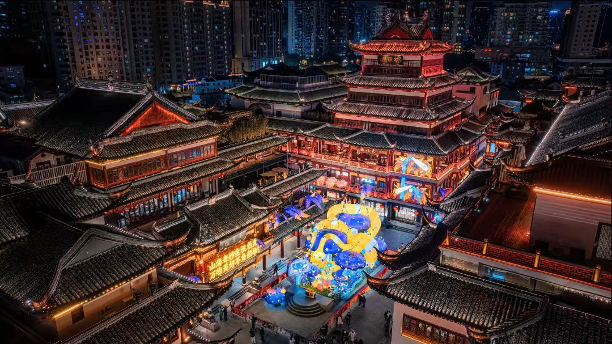

传奇：豫园是上海现存最大的古典园林，被誉为"东南名园之冠"。始建于明嘉靖三十八年（1559年），为时任四川布政使潘允端所建，取名"豫园"，取"豫悦老亲"之意。园林占地三十余亩，是江南园林艺术的杰出代表，融合了明清两代造园精华，体现了"虽由人作，宛自天开"的造园理念。
核心看点：
游览攻略：
交通信息：位于上海市黄浦区福佑路168号，地铁10号线豫园站直达。周边有城隍庙、豫园商城，可一并游览。建议与上海老街、外滩组成经典旅游线路。
兴建背景：明嘉靖三十八年（1559年），四川布政使潘允端为让其父潘恩安享晚年，在上海县城内购地七十余亩，始建豫园。园名"豫"取《周易》"豫卦"，有"豫悦老亲"之意。潘允端亲自设计，历时十八年，于万历五年（1577年）初步建成，被誉为"东南名园之冠"。
明代鼎盛：豫园建成后，潘家时常在此宴请宾客，举办诗会雅集。园林布局精巧，建筑华丽，有厅堂楼阁三十余处，奇峰异石数十座，成为上海文人雅士的聚集地。潘允端在《豫园记》中详细记载了园林的建造过程与景致。
清代变迁：明末潘家衰落，园林日渐荒废。清康熙四年（1665年），地方士绅集资购买豫园部分区域，划归城隍庙，成为庙园。乾隆二十五年（1760年），富商集资重建，历时二十余年，园林重获新生。乾隆四十九年（1784年）建湖心亭、九曲桥，形成今日格局。
小刀会风云：咸丰三年（1853年），上海小刀会起义，占据上海县城。起义军以豫园点春堂为指挥部，坚持斗争十八个月。清军攻破县城后，豫园遭受严重破坏，点春堂成为重要历史遗址。
近代命运：鸦片战争后，上海开埠，豫园周边逐渐成为商业区。清光绪年间，园内设商铺、茶楼，园林功能发生变化。1926年，内园成立钱业公所，成为上海金融业的活动中心。1956年起，上海市人民政府对豫园进行全面修复，历时五年，于1961年重新开放。
保护复兴：1982年，豫园被列为全国重点文物保护单位。20世纪80年代起，进行多次大规模修复，恢复明代园林风貌。如今豫园与城隍庙、豫园商城共同构成上海最具代表性的传统文化旅游区，每年接待游客数百万。
总体布局：豫园采用江南私家园林典型的"山水园林"布局，以水为中心，建筑环水而建。全园可分五个景区：仰山堂大假山区、万花楼点春堂区、玉玲珑玉华堂区、内园区、九曲桥湖心亭区。园内"移步换景，步移景异"，体现了"以小见大"的造园艺术。
叠山艺术：大假山是豫园的精华所在，由明代叠山大师张南阳设计建造。山体用约2000吨武康黄石堆叠而成，主峰高12米，是江南现存最大、最精美的黄石假山。山中有蹊径、洞穴、瀑布，登顶可俯瞰全园，远眺城隍庙，体现"城市山林"意境。
理水艺术：豫园水体面积约占全园五分之一，以聚为主，以分为辅。主要水面"荷花池"位于园中心，周围建筑皆面向水面。池水通过小溪、水口与各小池相连，形成完整水系。九曲桥蜿蜒池上，既分隔水面，又增加了游览趣味。
建筑艺术：豫园建筑形式多样，厅、堂、楼、阁、轩、榭、亭、廊一应俱全。建筑多采用江南民居风格，白墙灰瓦，栗色门窗，与山石花木相映成趣。建筑布局疏密有致，或临水，或依山，或隐于林木之中，体现了"虽由人作，宛自天开"的境界。
花木配置：豫园植物配置讲究四季有景：春有玉兰、海棠；夏有荷花、紫藤；秋有桂花、菊花；冬有梅花、山茶。古树名木众多，有四百余年古银杏、三百余年广玉兰等。花木与建筑、山石、水体巧妙结合，营造出"花影移墙，峰峦当窗"的意境。
空间处理：豫园运用多种手法扩大空间感：①借景：登大假山可借景城隍庙；②对景：三穗堂与仰山堂隔水相望；③框景：通过门窗洞框取景致；④障景：用山石、建筑分隔空间；⑤漏景：通过花窗、漏窗隐约透景。这些手法使有限空间产生无限意趣。
园林文化：豫园是明代江南文人园林的典范，体现了"诗情画意"的造园理念。园中建筑命名多取自诗文典故：得月楼（取自"近水楼台先得月"）、绮藻堂（取自"绮藻繁缛"）、玉华堂（取自"玉润华滋"）。匾额楹联皆为名家手笔，充满文人气息。
书画艺术：豫园曾是上海书画艺术的中心。明代董其昌、陈继儒等文人常在此雅集。清代"海上画派"画家任伯年、虚谷、吴昌硕等也常在豫园活动。园内保存大量明清时期的匾额、楹联、碑刻，是研究明清书法艺术的宝库。
戏曲传承：豫园与昆曲、京剧渊源深厚。点春堂曾是戏曲演出场所，清末民初，京剧名角常在此演出。内园古戏台建于清光绪十四年（1888年），是上海现存最完整的古戏台之一，至今仍时有演出。
节庆活动：①豫园灯会：始于清光绪年间，每年元宵节举办，是上海规模最大的传统灯会。②重阳登高：重阳节登大假山，寓意"步步高升"。③中秋赏月：在得月楼、湖心亭赏月品茶。④豫园茶文化节：展示江南茶道，传承茶文化。
美食文化：豫园周边汇聚上海传统小吃：①南翔小笼：皮薄馅大，汤汁鲜美。②宁波汤圆：糯滑香甜，馅料多样。③五香豆：老城隍庙特产，香脆可口。④梨膏糖：传统药食同源糖果。⑤海棠糕：形似海棠，甜而不腻。湖心亭茶楼是上海最老的茶楼，可品茶观景。
商业文化：豫园商城是上海传统商业中心，有"小商品王国"之称。老饭店、绿波廊、南翔馒头店等百年老店汇聚于此。这里既有传统手工艺品（剪纸、面塑、灯彩），也有现代文创产品，是传统与现代交融的商业街区。
历史价值：豫园是上海城市发展的历史见证，记录了从明代私家园林到清代庙园，再到近代公共园林的演变过程。它是上海城市文脉的重要载体，反映了上海从江南县城到国际大都市的历史变迁。点春堂的小刀会起义遗址，更赋予园林革命历史价值。
艺术价值：豫园是江南古典园林艺术的杰出代表。大假山是张南阳叠山艺术的唯一遗存，具有极高艺术价值。玉玲珑是太湖石中的极品，"皱、漏、瘦、透"四美俱全。园林建筑、花木、山水有机结合，体现了"诗情画意"的审美境界。
科学价值：豫园的营造技术体现了古代工匠的智慧。大假山的堆叠技术，解决了黄石假山易塌陷的难题。园林的理水系统，通过暗沟、明渠结合，保证了水体流动与自净。建筑木结构的榫卯工艺，历经数百年依然牢固。
社会价值：豫园是上海市民的文化记忆与精神家园。它不仅是旅游景点，更是上海传统文化的重要象征。园内定期举办的文化活动，成为市民文化生活的重要组成部分。豫园灯会、庙会等民俗活动，传承了上海的地方文化。
旅游价值：豫园是上海最著名的文化旅游地标之一，年接待游客超千万人次。它与外滩、南京路共同构成上海经典旅游线路。豫园商城的小商品、特色小吃，满足了游客购物、美食需求。作为城市中心的古典园林，豫园为现代都市提供了"诗意栖居"的空间。
保护与传承：1961年，豫园被列为上海市文物保护单位；1982年，升为全国重点文物保护单位。上海市政府多次拨款修复，恢复园林历史风貌。建立豫园管理处，负责日常维护与管理。开展学术研究，出版《豫园志》《豫园建筑艺术》等专著。利用现代技术进行数字化保护，建立豫园数字博物馆。